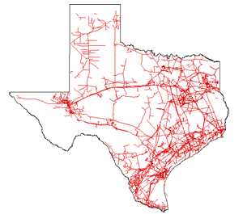

|
Intrastate Natural Gas Pipeline Segment
Overview
Intrastate natural gas pipelines operate within State borders and link natural gas producers to local markets and to the interstate pipeline network. Approximately 29 percent of the total miles of natural gas pipeline in the U.S. are intrastate pipelines.
Although an intrastate pipeline system is defined as one that operates totally within a State, an intrastate pipeline company may have operations in more than one State. As long as these operations are separate, that is, they do not physically interconnect, they are considered intrastate, and are not jurisdictional to the Federal Energy Regulatory Commission (FERC). More than 90 intrastate natural gas pipelines operate in the lower-48 States.
Selected State Highlights ---
- Texas:
- Texas is the top ranked natural gas consuming State.
- Intrastate pipelines in Texas account for 45,000 of the 58,600 miles of natural gas pipelines in the State.
- The largest intrastate pipelines in Texas are Enterprise Texas Pipeline Company (8,750 miles) and the Energy Transfer Partners LP (8,800 miles).
- The intrastate network in Texas has experienced significant growth over the past several years as a result of increased demand for pipeline capacity caused by the rapid development and expansion of natural gas production in the Barnett Shale Formation.
- New pipelines have been built, and expansions to existing ones undertaken, to meet increased demand.
- California:
- California is ranked the second largest natural gas consuming State.
- Intrastate transportation and distribution are dominated by California Gas Transmission Co. (PG&E) (3,477 miles), Southern California Gas (SoCal) Company (1,887 miles), and the San Diego Gas and Electric Company.
- SoCal and PG&E are two of the largest distribution companies in the entire United States.
- Wyoming, Colorado, and Utah:
- Development of new, large-diameter intrastate gathering pipelines is proceeding at a fast pace in this area, as proved reserves of coalbed methane, tight sands, and conventional natural gas supplies are being developed.
- During the past several years, at least 8 large-capacity pipeline header systems have been built in Wyoming to transport natural gas from local gathering systems.
- In Piceance Basin of western Colorado and the Uinta Basin of eastern Utah, several new large gathering systems have been developed to feed expanding natural gas production into the interstate pipeline network.
- The Overland Trails Transmission Company and the Rocky Mountain Natural Gas Company are the principal intrastate pipelines in this area, and provide some of the primary links between expanding natural gas production fields in the area and the interstate pipeline network.
In some instances, an intrastate natural gas pipeline may also be classified as a "Hinshaw" pipeline. Although such pipelines receive all of their supplies from interstate pipeline sources, and therefore fall within FERC’s regulatory purview, they have been exempted from its jurisdiction because the gas they deliver is consumed totally within the state in which they operate.
|
Texas has more intrastate natural gas pipeline miles
(over 43,000) than any other State.

|